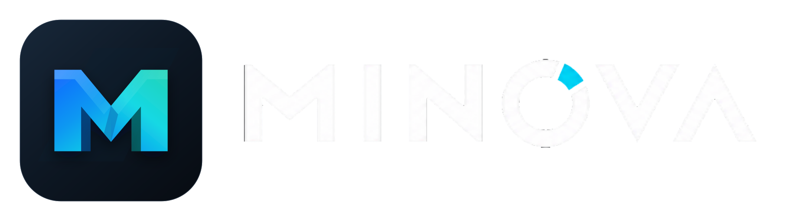

Minova visual identity 2.1

Shape your own path.
The Prism M and custom MINOVA wordmark create one focused identity for a browser built around choice, privacy, and powerful local tools.

The symbol
Two paths become one precise M.
The Prism M combines cool blue and cyan directional facets into one compact mark. It is engineered to remain recognizable from a 16-pixel favicon to full release artwork.
- Use the symbol when the Minova name is already understood
- Preserve one-quarter-symbol clear space
- Never stretch, rotate, bevel, glow, or outline the mark
The name
Geometric lettering with one unmistakable signal.
The official wordmark is a custom outlined vector. Its cyan O segment and clean letter edges must remain exactly as supplied in the master file.

Core palette
Graphite calm. Prismatic energy.
Night tones let content lead. Blue, cyan, and teal identify navigation and action. Status colors keep functional meaning.
#0D121A#17202C#1769FF#0798F2#16D8E4#24D3B5The complete package
Everything needed to build Minova consistently.
The public kit contains the browser-based guide, authoritative SVGs, a multi-size Windows ICO, PNG icon exports, CSS and JSON design tokens, editable templates, references, and the GPL-3.0 license.
- Vector masters
- Symbol, wordmark, lockup, and supporting pattern
- Platform exports
- PNG icon sizes, logo exports, and Windows ICO
- Design system
- CSS properties and platform-neutral JSON tokens
- Templates
- Release cover, social banner, and installer panel